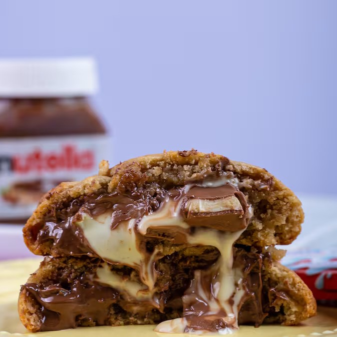
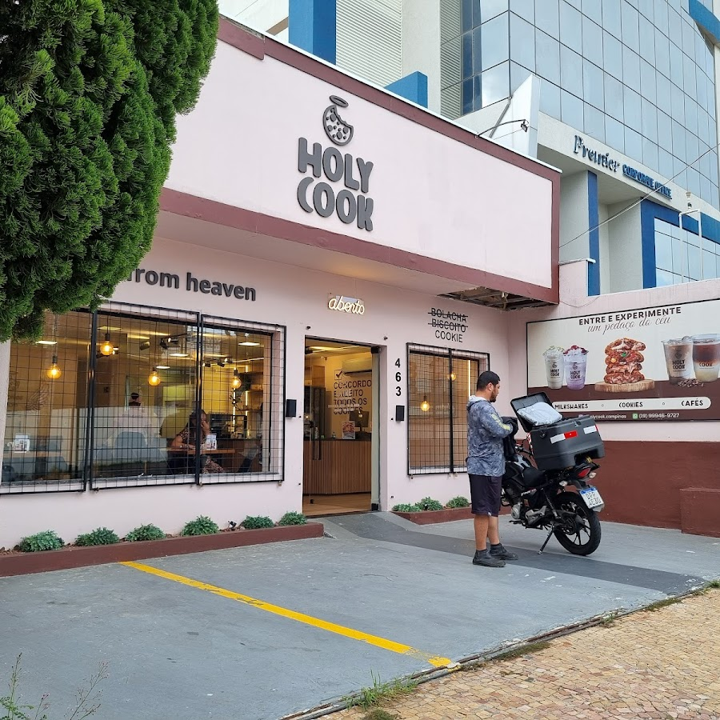

A Holy Cook
Começou com
um cookie.
Virou encontro.
Porque uma pausa gostosa fica ainda melhor quando é compartilhada.

Cookies from heavenO começo da nossa história2020com Aline e Yuri.
Cada mordida, um pedaço do céu
Uma vontade.
Muitos momentos.
A história da Holy Cook começou em 2020, com Aline e Yuri. Os cookies estão no centro dessa história — no nome, nas embalagens e na vontade de voltar para mais uma mordida.
Hoje, cafés, shakes, sobremesas e lanches também fazem parte do universo da Holy. Para quem chega pelo cookie e fica pelo momento.
A história, contada pela Holy
Da primeira mordida à próxima visita
Seu lugar
para uma pausa.
Na loja, no caminho de casa ou naquele encontro marcado de última hora. Descubra a Holy mais perto de você e escolha como aproveitar.
Encontre sua HolyUm pouco mais do nosso dia